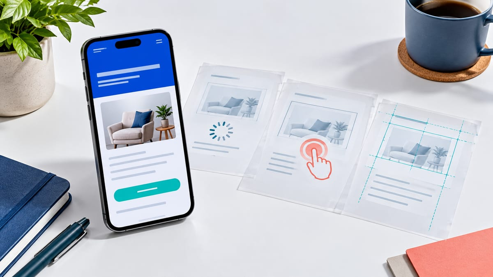

建站
建站时如何减少移动端广告流量流失
更新于 。移动端流失可能发生在内容出现前、点击响应时，也可能发生在填写和提交之后。先分清哪一段出了问题，再决定压图、改交互还是检查表单；一次高分测试不等于真实用户都能顺利咨询。

先用真实手机走完整路径
不要只在电脑浏览器缩窄窗口。用可取得的 iPhone 与 Android 真机，在移动网络及 Wi-Fi 下打开广告最终网址，完成滚动、菜单、表单、电话和聊天流程。检查横向滚动、浮层遮挡、键盘盖住字段、返回后信息丢失。浏览器模拟尺寸用于先找布局问题，不能替代真机、网络和输入法差异。
记录测试设备、浏览器、网络条件及具体网址；区分首次访问与已有缓存。保留一段能复现问题的操作记录，比“手机打开有点慢”更便于交接。这是测试方法，不表示本文已经测得你的网站真实用户指标。
首屏仍要回答三个问题
手机首屏应说明“这是什么、是否适合我、下一步做什么”。H1 写具体产品或服务，辅助文字说明对象，按钮使用与实际业务一致的“查看规格”“预约咨询”等动作。不要只显示品牌口号，也不必为了压缩首屏删去必要的业务、费用和联系说明。
LCP、INP、CLS 分别在检查什么
截至 2026 年 10 月 28 日核对的 Google Web Vitals 说明，三项核心指标分别关注加载、交互和视觉稳定。下表是官方“良好”目标，不是本站测试结果，也不是排名或转化保证。
| 指标 | 检查的问题 | 良好目标 | 不能等同于 |
|---|---|---|---|
| LCP | 视口内最大的主要图片或文本块何时呈现 | 不超过 2.5 秒 | 整页所有资源都已加载完毕 |
| INP | 点击、轻触或键盘操作后，页面呈现反馈的延迟 | 不超过 200 毫秒 | 表单服务器已处理完、客户已联系成功 |
| CLS | 页面中意外布局移动带来的不稳定程度 | 不超过 0.1，无单位 | 任何滚动或动画都算布局偏移 |
判断真实用户体验要看第 75 百分位，并区分移动与桌面，而不是拿一次测试值或平均值替代。PageSpeed Insights 说明将实验室诊断与过去 28 天的 CrUX 真实用户数据分开；还要看报告是当前 URL 还是整个来源。样本不足时可能回退来源级，或没有真实用户报告，不能写成“0 毫秒”或“已达标”。
有足够三项数据时需分别核对；PSI 对缺少 INP 数据有基于 LCP 与 CLS 的评估规则，应按报告实际状态解读，不能替它补一个 INP 通过。实验室分数高也不能证明移动端真实用户已全绿。
压缩图片前，先确认主要瓶颈
不要上传相机原图后仅用 CSS 缩小。按实际显示尺寸提供响应式图片，选合适的 WebP、AVIF 或兼容格式，并声明宽高或稳定比例。但文件变小不一定解决等待：先识别实际 LCP 元素，检查它何时被发现、下载和呈现。
Google 的 LCP 优化指南提醒不要对 LCP 图片使用懒加载；必要时为已确认的重要图片使用 fetchpriority="high"，不是给每张图片都设最高优先级。CSS 背景图可能更晚被发现，需结合请求链评估，不是把所有图片改背景就会更快。
布局稳定还包括字体、轮播和后插入的聊天或提示区域。为需要的空间预留尺寸，避免用户正准备点击时按钮被推走。CLS 优化说明也区分预期交互与意外移动：不能看到页面动了一下，就把全部变化记成 CLS 问题。
六种症状，先取证再修改
下面是条件式排查顺序，不是已发生在你网站的诊断。一次只改能说明问题的因素，再在相同设备、网络和操作路径下复测。
| 可复现的症状 | 先查的证据 | 有依据再做的调整 | 避免的误判 |
|---|---|---|---|
| 主图很晚才出现 | 实际 LCP 元素、图片发现及请求顺序 | 核对懒加载、响应式源和关键图优先级 | 盲目把所有图片设为高优先级 |
| 很久才收到页面内容 | 重定向链、文档响应与网络环境 | 分别排查无必要跳转、缓存或服务器响应 | 只压图片就宣布服务器问题已修复 |
| 点菜单后页面迟迟不反馈 | 重现该交互，检查主线程与处理耗时 | 缩短阻塞任务、减少不必要的同步工作 | 把服务器业务完成时间全部算成 INP |
| 图片或聊天载入后按钮移位 | 偏移发生时刻、影响元素及预留空间 | 补尺寸、稳定插入区域，再检查后续操作 | 为追求分数直接删掉必需的告知或联系入口 |
| 实验室高分，真实用户仍提示异常 | URL/来源、设备、采集期及样本情况 | 对齐范围后，复现真实路径中的问题 | 用一次本机跑分覆盖过去 28 天的数据 |
| 按钮能点，却没有有效询盘 | 成功、校验失败、网络失败及重复提交路径 | 核对真实响应、记录与转化去重 | 把每次按钮点击都记成客户 |
交互排查可参照官方 INP 优化指南。不要为了提分一律移除追踪、同意管理或服务所需脚本；先确认功能与数据边界，修改后重新验收。本文不代替隐私合规判断，也不会操作你的标签或账户。
三种假设情境：怎样写出可执行结论
以下为原创教学情境，不是本站实测、客户案例或效果数据。
- 本机很快，但没有真实用户数据。只能记录本次设备和实验室结果；现场报告写“数据不足”，继续检查菜单与咨询路径，不把它补成“移动端 CWV 通过”。
- 按钮马上显示提交中，之后长期没有成功提示。即时视觉反馈与业务处理完成是两件事。分别查输入响应、接口返回、失败提示和记录是否落库；不能只改按钮颜色，也不能用点击事件替代成功事件。此处不假设本站部署了表单数据库。
- 图片已经压小，页面仍在图片出现后跳动。回到布局预留与实际偏移记录，核对宽高、字体和动态区域。文件体积、LCP 与 CLS 不是同一个问题，先确认原因，再复测相关指标和阅读路径。
表单和按钮要让用户完成下一步
冷流量首次联系可先收真正需要的称呼、有效联系方式和需求；B2B 项目按实际报价需要保留公司、市场或采购信息并解释用途，不把“越短越好”当作通用公式。字段适配手机键盘，错误紧邻字段，提交中有状态并防止重复操作；网络失败时不要静默清空用户已填内容。
成功提示说明后续安排，只写实际能履行的回复约定，并提供备用联系入口。聊天打开、电话按钮点击、成功提交和业务确认的有效询盘应分开记录，参照转化追踪基础和表单与追踪交接验收。测试使用可识别的测试资料，复核报表处理方式，不假设测试提交会自动排除。
按钮与背景有清晰对比、触控区域可用；固定工具栏不遮正文、表单错误或系统导航。菜单、弹窗和返回路径也需验收，不能只验“首次点击能打开”。
验收时保留四项记录
- 网址、版本、测试时间、设备/浏览器、网络与缓存条件；美国、香港及其他地区的实际测试环境分开写，不用查询语言推定网络地区。
- 问题路径与证据：进入页面、滚动、点击、输入、提交或返回，哪一步出现什么现象；截图可说明布局，但不能单独证明 INP 或真实用户达标。
- 只对齐同一指标、设备和范围比较修改前后；保留未测、样本不足和仍待核对项，不挑一次最高分，也不把新实验室结果冒充历史字段数据。
- 记录功能与数据验收：成功、失败、重复提交和备用联系路径都测；需要他人复核的业务或隐私项单独确认。速度改善后仍用可取得的实际询盘证据判断业务影响，不保证转化或排名提升。
- 最终网址正常返回并使用 HTTPS，重定向符合预期。
- 标题、主要内容和动作可读，图片不拉伸。
- 菜单与弹窗可关闭，没有横向溢出或浮层遮挡。
- 键盘、错误提示和返回路径可以继续操作。
- 成功、失败及重复提交的记录符合实际状态。
- 必要的隐私、服务、联系说明和备用路径可访问。
继续用落地页上线清单检查整体承接；需要交接广告合作事项时，可查看开户协助与代投服务范围，不要把教程中的检查项视为新增收费套餐或承诺。
需要检查移动端落地页？
发送页面地址，我们可以从手机视角检查速度、首屏、按钮和表单。